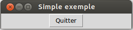

Tkinter sert à réaliser des interfaces graphiques pour l’utilisateur (GUI) à l’aide d’un ensemble de composants graphiques (widgets).
Nous commencerons par la part visible de tkinter en créant des composants graphiques (widgets) puis en les disposant sur l’écran. Ensuite, nous expliquerons comment connecter cette «façade graphique» de l’application à la logique qui se trouve derrière.
Voici un programme «tkinter» minimal qui contient un seul bouton «Quitter».
# Chargement du module tkinter
from tkinter import * # pour Python2 ce serait Tkinter
# Construction de la fenêtre principale «root»
root = Tk()
root.title('Simple exemple')
# Construction d'un simple bouton
qb = Button(root, text='Quitter', command=root.quit)
# Placement du bouton dans «root»
qb.pack()
# Lancement de la «boucle principale»
root.mainloop()
La dernière instruction root.mainloop() permet à l’application de recevoir des informations de la souris et du clavier (entre autres).
Avant d’entrer dans le coeur du sujet, voici quelques termes utilisés fréquemment ensuite: